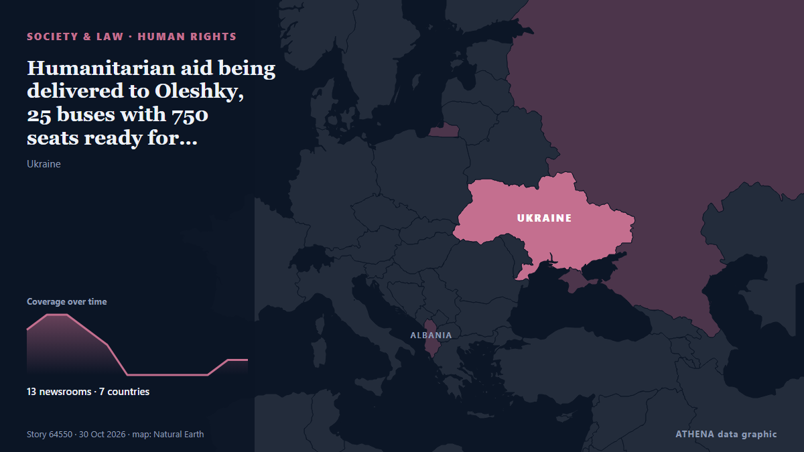

Humanitarian aid being delivered to Oleshky, 25 buses with 750 seats ready for evacuation – Lubinets

Ukraine's Human Rights Commissioner, Dmytro Lubinets, said that 25 buses with a total capacity of 750 seats had been prepared to evacuate residents of Oleshky, along with ambulances for people with… из Ukrinform (English)
Независимые источники: 13 изданий в 7 странах, с 30 окт.; первым сообщил APA (English); освещение на пике. ATHENA оценивает риск как высокий (6.2/10), прежде всего из-за тяжести описываемого ущерба и географического и отраслевого охвата. Уверенность — 84 % (высокая); подтверждают независимые источники: 13 изданий, средняя надёжность источников — 79 %.
Почему это важно: Полномасштабное вторжение России в Украину началось в феврале 2022 года. Мониторинг следит за боевыми действиями, ударами по инфраструктуре и дипломатией вокруг войны так, как их освещает мировая пресса.
Что изменилось: 18 новых сообщений от 13 редакций за 24 часа до 30 окт..
Первый заголовок: Aid Convoy Set for Russian-Occupied Oleshky in US-Mediated Mission
Заголовки приводятся на английском языке, как они были опубликованы.
Коротко в цифрах
Отобрано, оценено и написано по опубликованной методологии ATHENA. Ни один редактор не вмешивается в отдельные события. Как это создаётся ›
| 30 Oct 06:15 UTC | 3 |
|---|---|
| 30 Oct 07:15 UTC | 4 |
| 30 Oct 08:15 UTC | 4 |
| 30 Oct 09:15 UTC | 3 |
| 30 Oct 10:15 UTC | 2 |
| 30 Oct 11:15 UTC | 0 |
| 30 Oct 12:15 UTC | 0 |
| 30 Oct 13:15 UTC | 0 |
| 30 Oct 14:15 UTC | 0 |
| 30 Oct 15:15 UTC | 0 |
| 30 Oct 16:15 UTC | 1 |
| 30 Oct 17:15 UTC | 1 |
| 30 Oct 08:06 UTC | 3.2 |
|---|---|
| 30 Oct 08:17 UTC | 6.5 |
| 30 Oct 17:02 UTC | 6.2 |
| 30 Oct 17:26 UTC | 6.2 |
Откуда эти цифры
Значимость
Риск
Уверенность
Освещение — кто сообщил и когда
заголовок в оригинале · открывает источник- APA (English) · Азербайджан · AzerbaijanTwo killed during demining operations in Oleshky
- RFE/RL (English) · INTEvacuation From Oleshky Completed As Buses Head To Ukraine, Russia
- Euronews English · Франция · FranceEurope Today: Rare Oleshky truce holds in Ukraine, Albania imposes heavy fines on protesters
- France 24 English · Франция · France🔴 Ukraine war live: Russian strikes leave 200,000 without power in Ukraine's Dnipropetrovsk region
- Kyiv Post · Украина · UkraineOleshky Residents Leave for Ukraine, Russia as Truce Holds for 87 Hours
- Ukrainska Pravda (English) · Украина · UkraineOver 75 hours of ceasefire: Ukraine's human rights commissioner arrives in Armiansk, 25 buses ready for evacuation from Oleshky
- BelTA (English) — page reader · Беларусь · Belarus10:24 Russia and Ukraine share details of civilian evacuation from Oleshky Society
- Meduza (English) · Россия · RussiaRussian and Ukrainian ombudsmen head to occupied Oleshky on humanitarian mission to deliver aid and evacuate civilians
- The Moscow Times · Россия · RussiaAid Deliveries and Evacuations in Oleshky Begin After Demining Operation Wraps Up
- The Independent · Великобритания · United KingdomDesperate residents evacuate devastated Russian-occupied Oleshky by bus
- Ukrinform (English) · Украина · UkraineHumanitarian aid being delivered to Oleshky, 25 buses with 750 seats ready for evacuation – Lubinets
- Kyiv Independent · Украина · UkraineEvacuation convoys from Russian-occupied Oleshky split toward Ukraine, Russia, officials say
- Ukrainska Pravda (English) · Украина · UkraineUkrainian MP: Humanitarian aid being distributed in Oleshky, evacuation underway – video
- Meduza (English) · Россия · RussiaEvacuation, humanitarian aid distribution begin in Russian-occupied Oleshky
- Al Jazeera English · Катар · QatarAid convoy enters besieged Ukrainian town Oleshky
- Meduza (English) · Россия · RussiaInside Russian-occupied Oleshky: The first images from a city in humanitarian crisis as a temporary ceasefire allows civilian evacuations
- Meduza (English) · Россия · RussiaRussia’s human rights commissioner says humanitarian mission in occupied Oleshky is wrapping up
- Ukrainska Pravda (English) · Украина · UkraineOleshky evacuees are on their way, convoys have separated and ceasefire is holding – Ukraine's human rights chief